# Read a specific layer from the GeoPackage
tree_inventory_data <- st_read("tree_inv_ike.gpkg", layer = "datasheet_ecosense2023")
# renaming a column that has (for whatever reason) a weird name
tree_inventory_data <- tree_inventory_data %>%
rename(plot = ï..Plot)
setnames(tree_inventory_data, tolower(names(tree_inventory_data)))
field_extent <- st_read("tree_inv_ike.gpkg", layer = "field_extent")
# Transform from EPSG:4326 to EPSG:32632
tree_inventory_data <- st_transform(tree_inventory_data, crs = 32632)
field_extent <- st_transform(field_extent, crs = 32632)inventory_sampling
Exercise on Inventorying (Sampling, Plots, …)
This is an interactive R script (Quarto Document) designed to let you directly see the effects of coding and to make everything easier to follow.
I. What Is This About?
In this exercise, we will deepen your knowledge of inventorying, focusing on the topic of forests.
Each chapter will guide you through the necessary steps, so by the end, you’ll be able to consider the pros and cons of the different approaches in your next inventory. This will help you decide on the right method for your application and make yourself aware of the potential pitfalls.
A chapter overview can be seen on the right side of the document. This is how it goes:
- First, we’ll install and load the necessary packages
- then we’ll proceed to basic statistics on our dataset.
- From there, we’ll move on to two possible types of sampling inventories: simple-random-sampling and regular grid.
- At the end we will encounter a real scenario of a person doing an inventory with given plot locations.
II. Let’s Get Started: Loading and Inspecting the Data
For this exercise, we’ll need the following packages:
| Package | Description |
|---|---|
sf |
Provides simple features for handling and analyzing spatial data, making it easy to work with geometries. |
dplyr |
A grammar of data manipulation that helps in data wrangling tasks such as filtering, selecting, and summarizing. |
tmap |
A package for thematic mapping, offering an easy way to create static and interactive maps. |
ggplot2 |
A powerful system for creating complex and layered graphics using the grammar of graphics. |
units |
Provides support for handling measurement units in R, ensuring unit-aware arithmetic and conversion. |
reshape2 |
Helps in transforming and reshaping data, particularly useful for converting between wide and long formats. |
Next, we will load our forest inventory (make sure to pay attention to the file path: no umlauts, no spaces/special characters). We have one geopackage holding two feature layers:
the inventory data itself (point geometries)
the field extent (polygon)
head(tree_inventory_data)Simple feature collection with 6 features and 10 fields
Geometry type: POINT
Dimension: XY
Bounding box: xmin: 416706.7 ymin: 5346834 xmax: 416715.8 ymax: 5346845
Projected CRS: WGS 84 / UTM zone 32N
plot tree latitude longitude species dbh date field_8 name
1 1 1 48.26933 7.877596 Beech 19.0 2023-03-07 <NA> 1_1
2 1 2 48.26933 7.877594 Beech 10.4 2023-03-07 <NA> 1_2
3 1 3 48.26930 7.877539 Oak 44.6 2023-03-07 <NA> 1_3
4 1 4 48.26924 7.877602 Beech 9.7 2023-03-07 <NA> 1_4
5 1 5 48.26925 7.877635 Beech 17.3 2023-03-07 <NA> 1_5
6 1 6 48.26927 7.877661 Beech 11.4 2023-03-07 <NA> 1_6
desc geom
1 DBH: 19 cm ,Beech POINT (416711 5346844)
2 DBH: 10.4 cm ,Beech POINT (416710.9 5346845)
3 DBH: 44.6 cm ,Oak POINT (416706.7 5346841)
4 DBH: 9.7 cm ,Beech POINT (416711.3 5346834)
5 DBH: 17.3 cm ,Beech POINT (416713.8 5346836)
6 DBH: 11.4 cm ,Beech POINT (416715.8 5346838)Here, we can see that we have 7 attribute fields and that the data is already projected (EPSG: st_crs(tree_inventory_data)$epsg). The field “geom” indicates that we have point objects (which makes sense for trees—everything is as expected).
Now, we could simply plot the data by Lon/Lat and color it by PlotID to see what has been done. This can be conveniently done with the “tmap” library.
A little tip: If you need more information about working with geospatial data in R, colleagues from the Geography department have designed a wonderful basic course (in german) on this topic. –> https://thinking-spatial.org/courses/angewandte_geodatenverarbeitung/
Feel free to ask us anytime if something is unclear! :)
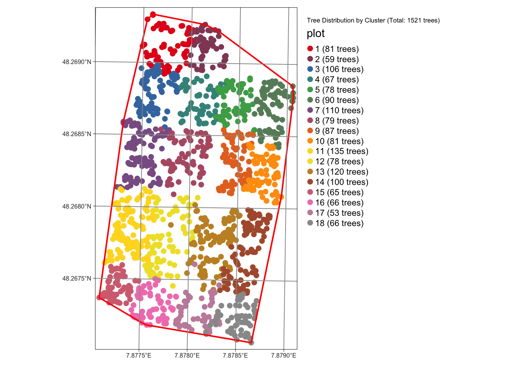
We see that we have 18 clusters here, some larger and some smaller.
For clarification: In the table the clusters are called “plot”, which is not a forest plot in the forestry meaning. So this is simply the clustering/tiling here. To not be confused.
The total area of the forest section is approximately 2.78 hectares. Additionally, we have 1521 trees in total across these plots, and the average area of each cluster is approximately 0.31 hectares.
Now, let’s take a look at how they are colored by DBH (where we have thicker and thinner trunks) to get a visual impression, almost as if we were standing on-site:
Warning: The shape tree_inventory_data contains empty units.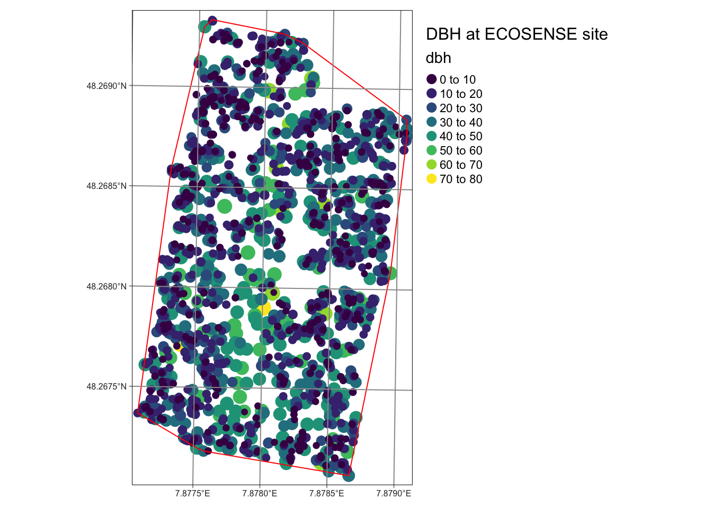
Additionally, let’s also examine the distribution of tree species. This will give you an initial indication of where a sampling inventory might make sense (keyword: representativeness).
# Plot 2: Tree species where the same species share the same color
plot_species <- tm_shape(tree_inventory_data) +
tm_dots(col = "species",
palette = "Set1", # Use a qualitative palette for species
size = 0.2, # Fixed point size for species plot
legend.size.show = FALSE) +
tm_shape(field_extent) +
tm_borders(col = "red", lwd = 1) +
tm_graticules(lines = TRUE, labels.size = 0.5, col = "gray60", n.x = 4, n.y = 4) +
tm_layout(legend.outside = TRUE) +
tm_legend(title = "Tree Species")
# Adjust layout to maximize map area
tm_layout(
frame = TRUE, # Remove plot frame
outer.margins = 0, # Remove outer margins
inner.margins = 0.02, # Minimize inner margins
asp = 0 # Automatically adjust aspect ratio
)
# Arrange both plots side by side
tmap_arrange(plot_species, nrow = 1)Warning: The shape tree_inventory_data contains empty units.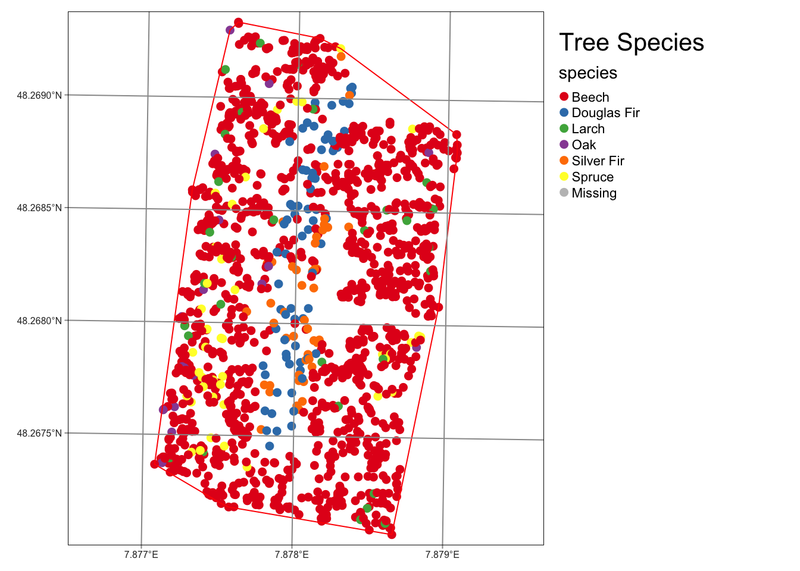
Feel free to familiarize yourself with the data. Observe where each tree species is located, where there are thicker or thinner trunks, where there are gaps, and where many trees are close together, etc. Try changing parameters in the code chunks above (those are the code blocks) or implement your own visualization ideas (nothing too complex). Just play around a bit. This will help you get a feel for the data we have here, which will aid in your understanding moving forward.
III. Statistics
Now let’s turn our attention to the statistical part of this exercise (Hooray!). We will calculate metrics such as mean, median, mode, standard deviation, IQR, and the quantiles Q1, Q2, Q3 (25%, 50%, 75%), as well as the 5% and 95% quantiles:
library(dplyr)
# Calculation of Central Tendency
mean_dbh <- mean(tree_inventory_data$dbh, na.rm = TRUE) # Mean
median_dbh <- median(tree_inventory_data$dbh, na.rm = TRUE) # Median
mode_dbh <- as.numeric(names(sort(table(tree_inventory_data$dbh), decreasing = TRUE)[1])) # Mode (value that appears the most)
# Calculation of Dispersion
sd_dbh <- sd(tree_inventory_data$dbh, na.rm = TRUE) # Standard Deviation
iqr_dbh <- IQR(tree_inventory_data$dbh, na.rm = TRUE) # Interquartile Range
# Calculation of Quantiles
quantiles_dbh <- quantile(tree_inventory_data$dbh, probs = c(0.05, 0.25, 0.5, 0.75, 0.95), na.rm = TRUE) # Q1, Q2, Q3
# Display results
results <- data.frame(
Mean = mean_dbh,
Median = median_dbh,
Mode = mode_dbh,
Standard_Deviation = sd_dbh,
IQR = iqr_dbh,
Q_05 = quantiles_dbh[1],
Q1 = quantiles_dbh[2],
Q2 = quantiles_dbh[3],
Q3 = quantiles_dbh[4],
Q_95 = quantiles_dbh[5]
)
# Remove row names for quantiles
rownames(results) <- NULL
print(results) Mean Median Mode Standard_Deviation IQR Q_05 Q1 Q2 Q3 Q_95
1 22.72128 16 9 14.88639 25.9 6.5 10 16 35.9 48.9Tables are nice, but visualizations are better - therefore, let’s present it as a plot:
# Load necessary packages
library(ggplot2)
# Calculate minimum and maximum DBH
min_dbh <- min(tree_inventory_data$dbh, na.rm = TRUE)
max_dbh <- max(tree_inventory_data$dbh, na.rm = TRUE)
# Create a histogram with density plot and add Min/Max DBH in the title
ggplot(tree_inventory_data, aes(x = dbh)) +
geom_histogram(binwidth = 2, fill = "lightblue", color = "black", alpha = 0.6) +
geom_vline(aes(xintercept = mean_dbh, color = "Mean"), linetype = "dashed", size = 1) + # Mean line
geom_vline(aes(xintercept = median_dbh, color = "Median"), linetype = "dashed", size = 1) + # Median line
geom_vline(aes(xintercept = quantiles_dbh[1], color = "Q05"), linetype = "dashed", size = 1) + # 5% line
geom_vline(aes(xintercept = quantiles_dbh[2], color = "Q95"), linetype = "dashed", size = 1) + # 95% line
labs(title = paste("Distribution of DBH [cm] (Min:", round(min_dbh, 2), "Max:", round(max_dbh, 2), ")"),
x = "Diameter at Breast Height (DBH)",
y = "Frequency") +
scale_color_manual(values = c("Mean" = "blue", "Median" = "green", "Q05" = "yellow", "Q95" = "orange")) + # color
theme_minimal() +
theme(
legend.title = element_blank(), # Remove legend title
legend.spacing.y = unit(0.5, 'cm'), # Increase vertical spacing between legend entries
legend.key.height = unit(1, 'lines'), # Increase space around legend key
legend.text = element_text(size = 10) # Adjust text size for better readability
)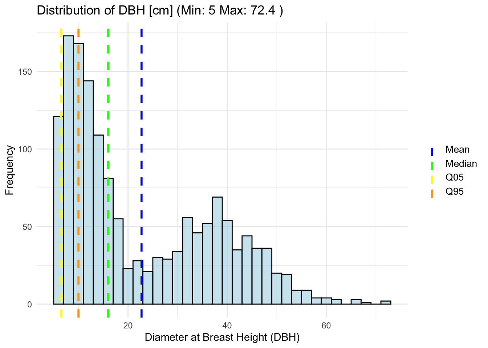
# Load necessary packages
library(ggplot2)
# Calculate minimum and maximum DBH
min_dbh <- min(tree_inventory_data$dbh, na.rm = TRUE)
max_dbh <- max(tree_inventory_data$dbh, na.rm = TRUE)
# Create a histogram with density plot and add Min/Max DBH in the title
ggplot(tree_inventory_data, aes(x = dbh, fill = species)) +
geom_histogram(binwidth = 2, color = "white", alpha = 0.6, position = "stack") +
labs(title = paste("Distribution of DBH by Species"),
x = "Diameter at Breast Height (DBH)",
y = "Frequency") +
scale_fill_discrete(name = "Species") + # Legend for species
theme_minimal() +
theme(
legend.title = element_blank(),
legend.spacing.y = unit(0.5, 'cm'),
legend.key.height = unit(1, 'lines'),
legend.text = element_text(size = 10)
)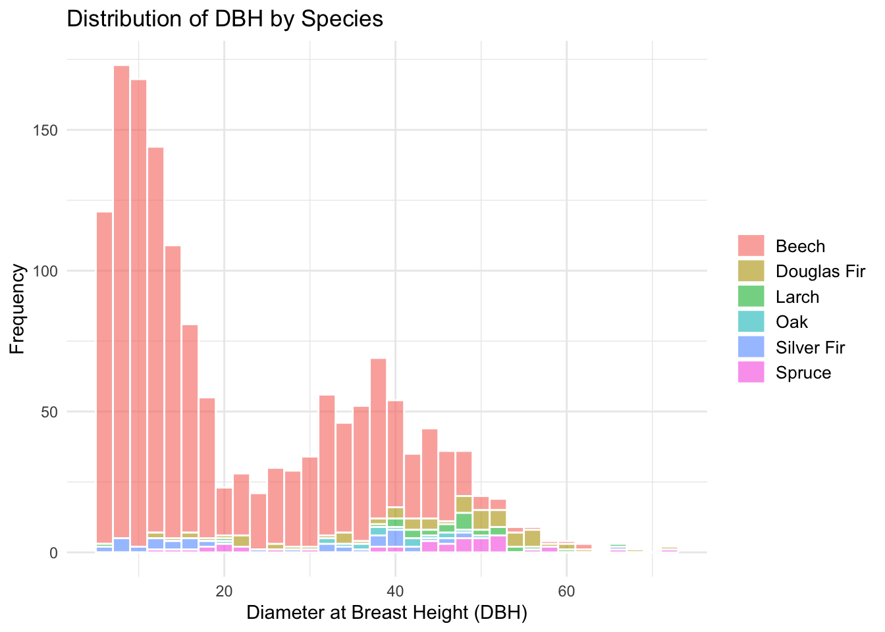
# Calculate the area covered by the trunk for each tree
tree_inventory_data <- tree_inventory_data %>%
mutate(trunk_area = pi * (dbh / 200)^2) # DBH in cm, area in square meters
# Calculate the total trunk area covered by all trees
total_trunk_area <- sum(tree_inventory_data$trunk_area, na.rm = TRUE)
# Print the total trunk area
print(paste("Total trunk area: ", round(total_trunk_area, 2), "m2"))[1] "Total trunk area: 87.95 m2"# Calculate the percentage of the total area covered by trees
percentage_covered_by_trees <- (total_trunk_area / st_area(field_extent)) * 100
# Print the percentage
print(paste("Percentage of total area covered by tree trunks:", round(percentage_covered_by_trees, 2), "%"))[1] "Percentage of total area covered by tree trunks: 0.32 %"# Print m2/ha occupied by the trees (forestry measure)
print(paste("Bestandsgrundflaeche/Basal area: ", round(total_trunk_area/(st_area(field_extent) / 10000), 2), "m2/ha"))[1] "Bestandsgrundflaeche/Basal area: 31.68 m2/ha"Take some time to think about what this distribution tells us. It would be best to discuss this briefly (or in groups).
(Thought prompts: Bimodal, Mean vs Median –> Meaning?, Q05 and Q95, high standard deviation, trunk area, …)
.
.
.
.
no, do not scroll down, think…
.
.
.
.
.
.
.
got you scrolling down (already thought about it?)
.
.
.
.
.
ok, now you can explore further :)
The Distribution and what it means:
Mean (22.72): This is the average value across all measurements in your dataset, which gives you a general idea of the “central” point but can be skewed by outliers.
Median (16): The median represents the middle value of the dataset, showing that half of the data values are above and half are below this number. Since the median is lower than the mean, this suggests a right-skewed distribution (a few higher values pulling the mean up).
Mode (9): The mode is the most frequently occurring value, which indicates the most common measurement in your data. A mode lower than both the mean and median further supports the right-skew.
Standard Deviation (14.89): This measures the spread of the data around the mean. A high standard deviation suggests that the data points are quite spread out, indicating variability in tree measurements.
IQR (25.9): The interquartile range (Q3 - Q1) measures the spread of the middle 50% of the data, which helps identify the range of typical values and can signal the presence of outliers. An IQR of 25.9, larger than the median, suggests a wide range in the data.
Q_05 (6.5): The 5th percentile tells us the value below which 5% of the observations fall, indicating that most of the data is higher than this value and giving us a sense of the lower tail.
Q1 (10), Q2 (16), Q3 (35.9): These quartiles break the data into quarters. The data is relatively spread out, with a large jump from Q2 (the median) to Q3, which further suggests skewness.
Q_95 (48.9): The 95th percentile tells us that only 5% of the data is above this value, which highlights the extreme values in the upper range of your data.
In summary, this distribution is right-skewed (as indicated by the mean > median > mode) and has a high degree of variability (large standard deviation and IQR). There are likely a few very large trees (or values) that create a long right tail. This shape suggests wide range of tree sizes.
This statistical analysis of DBH can help inform forest management practices, such as assessing tree growth, planning for harvest, or understanding species composition and health.
IV. Sampling and measurement accuracy
Now that we’ve examined the data, let’s move forward to the actual topic of sampling.
We will use 2 types of sampling methods and, in the end, compare the basal area from the “real” inventory with the different sampling methods.
We will use the following methods:
Simple random sampling: We randomly select trees from random plots and scale up the results.
Regular grid: We create a simple grid with regular intervals and scale up the results.
You can already start thinking about the advantages and disadvantages, but more on that later!
a) Simple Random Sampling
Let’s turn our attention to sampling. Suppose we use simple random sampling for the first case, randomly distributing points and recording trees within a 12 m radius. Would this reflect the “true” DBH and basal area statistics? How often are we off, and by how much? Let’s find out…
The steps in R are as follows:
Set parameters for the sampling.
Use a “for loop” to simulate multiple iterations.
Random points → Buffer → Clip → Intersection → calculate statistics.
Visualize the results.
library(ggplot2)
library(dplyr)
library(sf)
# Set the parameters for the simulation
num_samples <- 100 # Number of repetitions
num_points <- 10 # Number of random points
# Store the CRS of the tree_inventory_data
tree_crs <- st_crs(tree_inventory_data)
# Total area of the inventory
total_area <- st_area(field_extent)
# Empty list to store results
results_list <- vector("list", num_samples)
# Fix geometries to avoid intersection errors
field_extent <- st_make_valid(field_extent)
field_extent <- st_simplify(field_extent, dTolerance = 0.0001)
# Perform the simulation
for (i in 1:num_samples) {
# Generate random points within the field_extent
random_points <- st_sample(field_extent, size = num_points, type = "random") %>%
st_as_sf() %>%
mutate(id = row_number()) %>%
st_set_crs(st_crs(field_extent)) %>% # Set the CRS of field_extent
st_transform(tree_crs) # Transform the CRS to that of tree_inventory_data
# Create a buffer of 12 m around each point and combine with st_union() to avoid overlaps
buffered_points <- random_points %>%
st_buffer(dist = 12) %>%
st_union() %>%
st_make_valid() %>% # Ensure buffered points are valid
st_simplify(dTolerance = 0.0001) # Remove duplicate vertices
# Clip the buffered points to the field_extent
clipped_buffers <- st_intersection(buffered_points, field_extent)
buffer_area <- st_area(clipped_buffers)
# Intersection of trees with the buffered points
sampled_trees <- tree_inventory_data %>%
st_transform(tree_crs) %>% # Ensure the CRS matches
st_make_valid() %>% # Ensure valid geometries for tree data
st_intersection(clipped_buffers)
# Check if there are trees
if (nrow(sampled_trees) > 0) {
# Summarize results
basal_area_sampled <- sum(pi * (sampled_trees$dbh / 200)^2, na.rm = TRUE) / buffer_area * 10000
mean_dbh <- mean(sampled_trees$dbh, na.rm = TRUE)
# Calculate the area of the buffered region (already without overlaps and within the field_extent)
buffer_area <- st_area(clipped_buffers)
# Calculate the extrapolated basal area to the total area
basal_area_proportional <- drop_units(basal_area_sampled)
} else {
# If no trees are found, set the results to NA
basal_area_proportional <- NA
mean_dbh <- NA
}
# Store results in the list
results_list[[i]] <- data.frame(basal_area_proportional = basal_area_proportional, mean_dbh = mean_dbh, count = nrow(sampled_trees))
# Plot only for the first iteration as an example of what is happening here
if (i == 1) {
ggplot() +
geom_sf(data = field_extent, fill = "lightgrey", alpha = 0.5) + # Field extent
geom_sf(data = sampled_trees, color = "green", size = 2) + # Sampled trees
geom_sf(data = random_points, color = "blue", size = 3) + # Random points
geom_sf(data = clipped_buffers, fill = NA, color = "red", linetype = "dashed") + # Buffered area (clipped)
labs(title = "Sample Points and Trees in Field Extent",
subtitle = "Iteration 1",
x = "Longitude", y = "Latitude") +
theme_minimal()
# Show the plot
print(last_plot())
}
}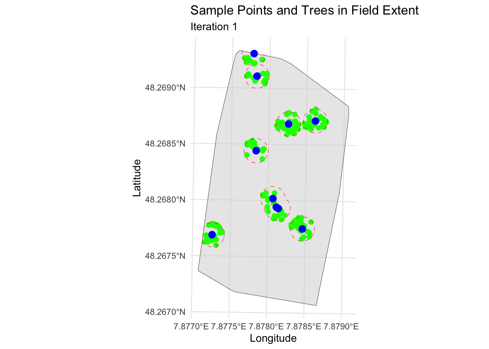
# Convert results into a DataFrame
results_df <- bind_rows(results_list)
# Calculate deviations (e.g., standard deviations)
final_results <- results_df %>%
summarise(
basal_area_mean = mean(basal_area_proportional, na.rm = TRUE),
basal_area_sd = sd(basal_area_proportional, na.rm = TRUE),
mean_dbh_mean = mean(mean_dbh, na.rm = TRUE),
mean_dbh_sd = sd(mean_dbh, na.rm = TRUE),
sample_count = sum(count) # Total number of trees across all samples
)
# Output the results
print(final_results) basal_area_mean basal_area_sd mean_dbh_mean mean_dbh_sd sample_count
1 32.21559 3.304055 22.81597 1.211445 22033Above is an example of what is happening here. We take random points in our area, draw 12 m circles, and include all the trees that are contained within them. Then we calculate our statistics for DBH and basal area again.
Result
true_basal_area <- drop_units(round(total_trunk_area/(st_area(field_extent) / 10000), 2))
# Plot the results for basal area
ggplot(results_df, aes(x = basal_area_proportional)) +
geom_histogram(bins = 30, fill = "lightblue", color = "white") +
labs(title = "Distribution of Basal Area over 100 Samples",
x = "Basal Area (m²/ha)",
y = "Number of Samples") +
geom_vline(aes(xintercept = true_basal_area), color = "red", linetype = "dashed", size = 1) +
annotate("text", x = true_basal_area, y = 1,
label = "True Basal Area", color = "red", vjust = -1)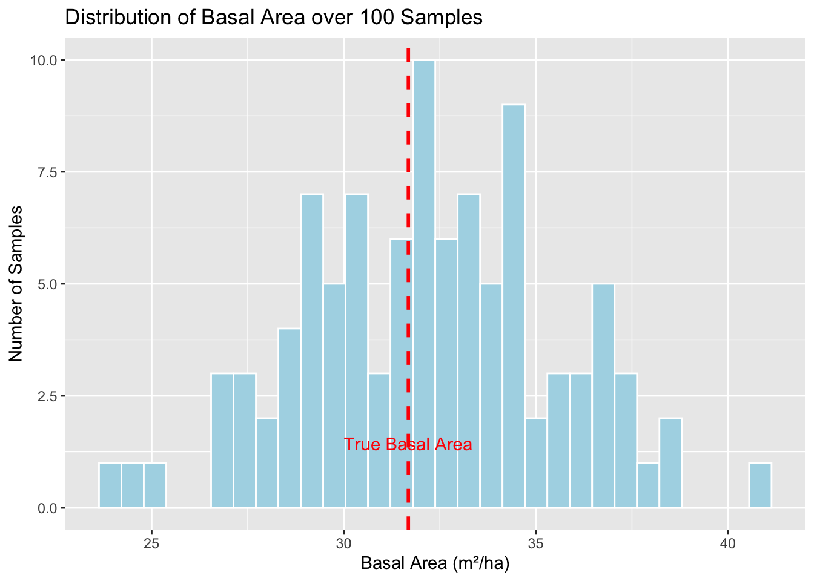
# Plot the results for mean DBH
ggplot(results_df, aes(x = mean_dbh)) +
geom_histogram(bins = 30, fill = "lightblue", color = "white") +
labs(title = "Distribution of Average DBH over 100 Samples",
x = "Average DBH",
y = "Number of Samples") +
geom_vline(aes(xintercept = mean(tree_inventory_data$dbh, na.rm = TRUE)), color = "red", linetype = "dashed", size = 1) +
annotate("text", x = mean(tree_inventory_data$dbh, na.rm = TRUE), y = 1,
label = "True DBH", color = "red", vjust = -1)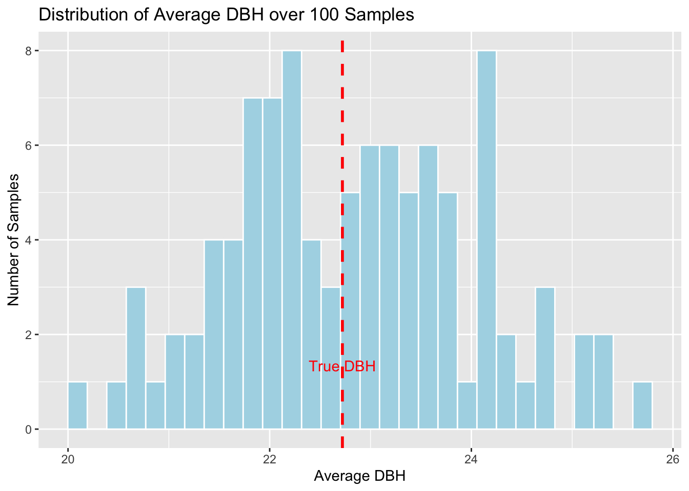
As we can see, the actual DBH and the basal area is often massively over- or underestimated.
Here we do not take into account that all tree species are represented — so it could be that you totally forget one or more tree species… And the random sampling might oversee clusters, or grab a site where almost no tree is located…
We can now adjust our parameters, such as using multiple points, a larger buffer around the trees → more effort, but probably more accurate results.
Feel free to try the following changes and run the script while noting the changes you observe. Do they meet your expectations? What is the behaviour? Think about it:
Fewer/more inventory points (num_points)
Change the buffer (smaller, larger)
b) regular grid
The regular grid is probably the simplest approach. We set up a point grid within our area with a chosen interval and then measure the trees within a radius of, for example, 12 meters from each point. We then calculate the DBH and basal area statistics of the forest stand. It’s clear that this will also have a large variation compared to the “real” values – we will see!
The steps are as follows:
First, we create a grid with points at regular intervals.
Then we again draw buffers around these points and measure all the trees contained within for our sampling inventory.
Finally, we extrapolate this to the total area (extrapolate buffer areas).
We represent the variability in a heatmap, which is associated with various parameters (grid spacing, buffer radius).
Warning: attribute variables are assumed to be spatially constant throughout
all geometries
Warning: attribute variables are assumed to be spatially constant throughout
all geometries[1] "Estimated total basal area for the entire area: 91.9317086470576"[1] "Real total basal area from tree inventory data: 87.9529350647786"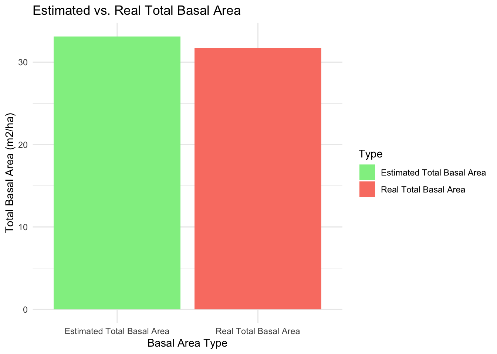
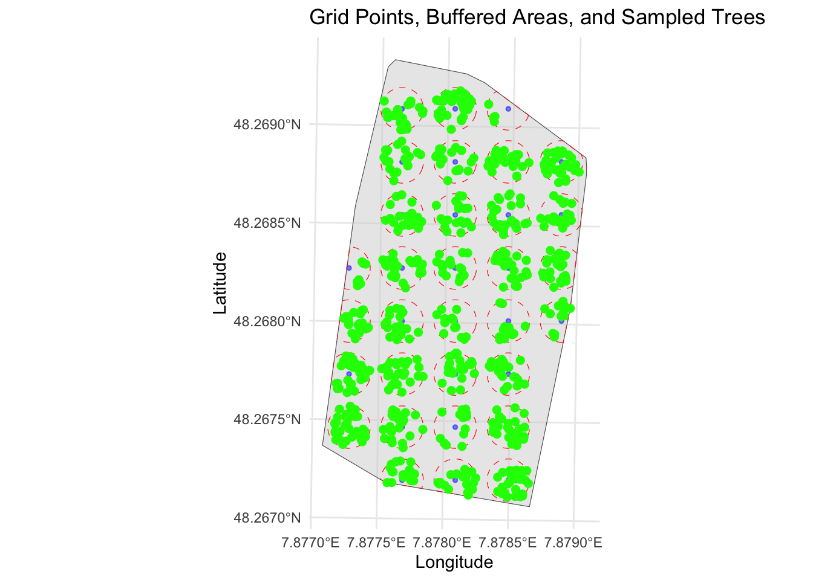
Grid_Spacing Buffer_Distance Estimated_Basal_Area Real_Basal_Area
1 20 5 76.71997 87.95294
2 20 6 78.23972 87.95294
3 20 7 80.55500 87.95294
4 20 8 85.31014 87.95294
5 20 9 86.38860 87.95294
6 20 10 87.17936 87.95294
7 20 11 87.54571 87.95294
8 20 12 88.03056 87.95294
9 20 13 88.54348 87.95294
10 20 14 88.99004 87.95294
11 20 15 88.51516 87.95294
12 30 5 81.07615 87.95294
13 30 6 85.13602 87.95294
14 30 7 94.21109 87.95294
15 30 8 94.46350 87.95294
16 30 9 95.14739 87.95294
17 30 10 94.78485 87.95294
18 30 11 92.56969 87.95294
19 30 12 91.93171 87.95294
20 30 13 92.80589 87.95294
21 30 14 91.05644 87.95294
22 30 15 90.70849 87.95294
23 40 5 100.76192 87.95294
24 40 6 102.35514 87.95294
25 40 7 95.10728 87.95294
26 40 8 83.69519 87.95294
27 40 9 83.30192 87.95294
28 40 10 81.91708 87.95294
29 40 11 87.71671 87.95294
30 40 12 89.18204 87.95294
31 40 13 86.20868 87.95294
32 40 14 84.44615 87.95294
33 40 15 82.84916 87.95294
34 50 5 131.72170 87.95294
35 50 6 121.44497 87.95294
36 50 7 107.50928 87.95294
37 50 8 95.65856 87.95294
38 50 9 93.41775 87.95294
39 50 10 89.34878 87.95294
40 50 11 87.86767 87.95294
41 50 12 86.24907 87.95294
42 50 13 92.11078 87.95294
43 50 14 91.85294 87.95294
44 50 15 91.66194 87.95294Warning in dcast(results, Buffer_Distance ~ Grid_Spacing, value.var =
"Estimated_Basal_Area"): The dcast generic in data.table has been passed a
data.frame and will attempt to redirect to the relevant reshape2 method; please
note that reshape2 is superseded and is no longer actively developed, and this
redirection is now deprecated. Please do this redirection yourself like
reshape2::dcast(results). In the next version, this warning will become an
error.Warning in melt.default(heatmap_data, id.vars = "Buffer_Distance",
variable.name = "Grid_Spacing", : The melt generic in data.table has been
passed a data.frame and will attempt to redirect to the relevant reshape2
method; please note that reshape2 is superseded and is no longer actively
developed, and this redirection is now deprecated. To continue using melt
methods from reshape2 while both libraries are attached, e.g. melt.list, you
can prepend the namespace, i.e. reshape2::melt(heatmap_data). In the next
version, this warning will become an error.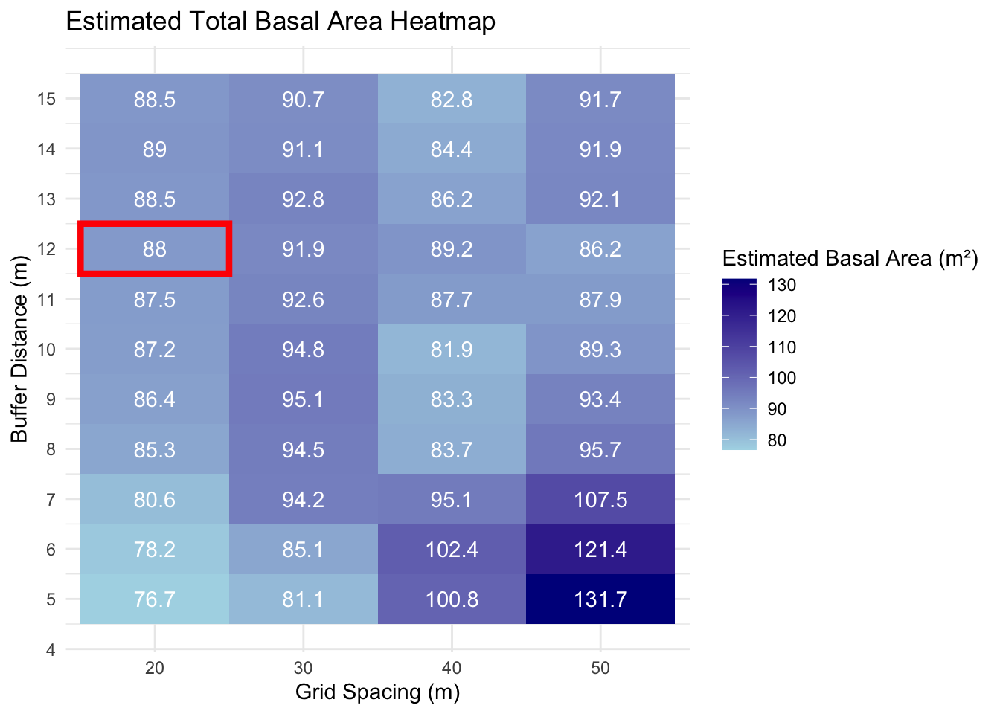
As expected, we see that there is a large variation in the values depending on the choice of the buffer and the grid spacing. Of course, if the grid spacing and the buffer are chosen such that every tree is covered, we will get the correct basal area; however, this is no longer a sampling inventory…
c) Measurement accuracy
This is the last chapter. You are almost done with the exercise.
Real case scenario ahead:
Now, think of taking measurements in the forest on a location where you know the exact coordinates. So let’s imagine that someone already took the effort of choosing “good” plots for your inventory and gave them to you. You imagine yourself navigating to these locations using your phone’s GNSS (Click this link: https://globalgpssystems.com/gnss/the-difference-between-gnss-and-gps-explained/) or maybe even a high accuracy GNSS-Tool. Then, in the forest, alone, you discover that your Signal is jumping back and forth and you can never be sure to be on the exact position you intended to go to. You start measuring, nonetheless. Position is position, right? At the end, you want to compare the results to previous years. In the office you notice, that all your locations are slightly off, some maybe a few metres… You are sweating because you now have in mind that it could be the case that you even didn’t consider all the trees measured in the past years… Don’t be scared - this is a common Problem.
Let’s simulate that specific scenario:
- create a list of 10 known coordinates inside the field extent
- take measurements of the trees in a certain radius (10m) from these locations (clip the buffer by the field extent)
- Plot these locations to get a visual feeling (first graph)
- calculate the statistics for your forest
- do that in a loop 10 times by varying the position of the known coordinates by 2m every time in a random direction (to see the influence of a floating gps coordinate)
- compare the results (second, third and fourth graph)
# Load required libraries
library(sf)
library(dplyr)
library(ggplot2)
# Function to generate random directions for GPS floating effect
shift_coordinates <- function(coords, shift_dist = 2) {
angle <- runif(1, 0, 2 * pi) # random direction in radians
coords_shifted <- st_coordinates(coords) +
shift_dist * c(cos(angle), sin(angle)) # move coordinates by 1.5m
st_sfc(st_point(coords_shifted), crs = st_crs(coords))
}
# Set up the initial 10 known coordinates inside the field extent
#set.seed(42) # For reproducibility
initial_coords <- st_sample(field_extent, size = 10, type = "random") %>%
st_as_sf() %>%
st_set_crs(st_crs(field_extent))
# Perform a baseline measurement with the initial coordinates
buffered_points_initial <- initial_coords %>%
st_buffer(dist = 10) %>%
st_union() %>%
st_intersection(field_extent) # Clip buffers by the field extent
# Ensure both datasets have the same CRS before intersection
if (st_crs(buffered_points_initial) != st_crs(tree_inventory_data)) {
tree_inventory_data <- st_transform(tree_inventory_data, st_crs(buffered_points_initial))
}
# Intersect trees with the initial buffers
sampled_trees_initial <- tree_inventory_data %>%
st_intersection(buffered_points_initial)
# Calculate statistics for the baseline measurement
if (nrow(sampled_trees_initial) > 0) {
mean_dbh_initial <- mean(sampled_trees_initial$dbh, na.rm = TRUE)
total_basal_area_initial <- sum(pi * (sampled_trees_initial$dbh / 200)^2, na.rm = TRUE) / drop_units(st_area(buffered_points_initial)) * 10000
} else {
mean_dbh_initial <- NA
total_basal_area_initial <- NA
}
# Plot the initial measurement for visual understanding
ggplot() +
geom_sf(data = field_extent, fill = "lightgrey", alpha = 0.5) +
geom_sf(data = sampled_trees_initial, color = "green", size = 2) +
geom_sf(data = initial_coords, color = "blue", size = 3) +
geom_sf(data = buffered_points_initial, fill = NA, color = "red", linetype = "dashed") +
labs(title = "Buffer and Trees for Initial Coordinates", subtitle = "Initial Measurement",
x = "Longitude", y = "Latitude") +
theme_minimal()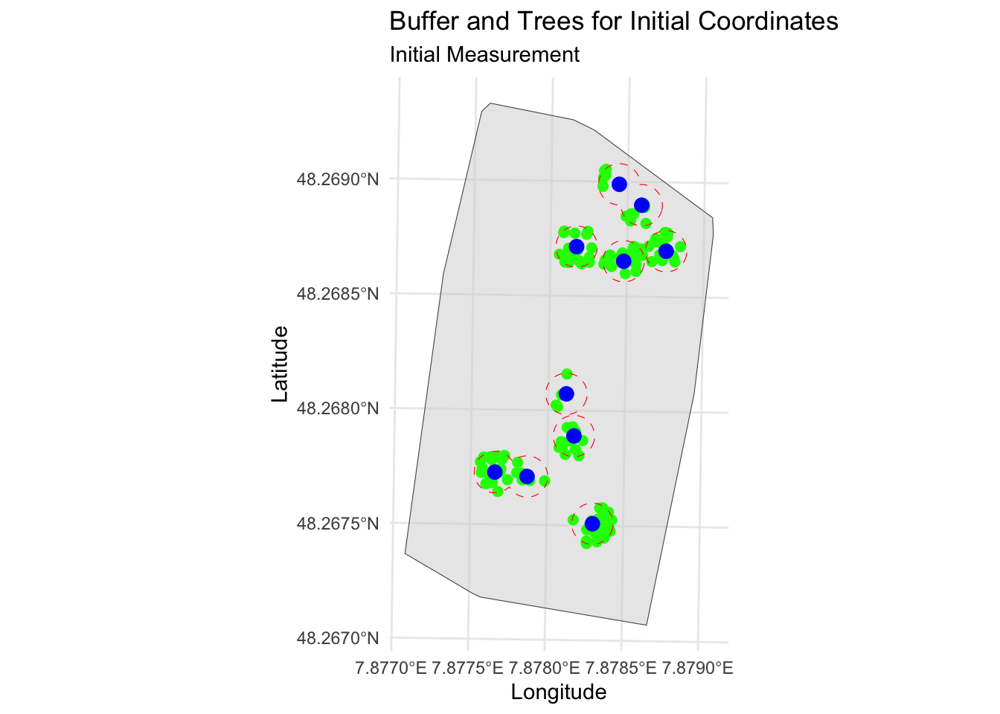
Now let’s start the loop and collecting statistics for 10 different measurements:
# Define number of iterations (loop runs)
num_iterations <- 10
# Empty list to store results for each iteration
results_list <- vector("list", num_iterations)
# Empty list to store species composition data for each iteration
composition_list <- vector("list", num_iterations)
# Loop to shift coordinates and compute results
for (i in 1:num_iterations) {
# Shift coordinates slightly by 2 meters in a random direction
shifted_coords <- initial_coords %>%
rowwise() %>%
mutate(x = shift_coordinates(x))
# Create buffers of 10m around the shifted coordinates
buffered_points <- shifted_coords %>%
st_buffer(dist = 10) %>%
st_union() %>%
st_intersection(field_extent) # Clip buffers by the field extent
# Intersect trees with the buffers
sampled_trees <- tree_inventory_data %>%
st_intersection(buffered_points)
# If there are trees in the buffer, calculate statistics
if (nrow(sampled_trees) > 0) {
mean_dbh <- mean(sampled_trees$dbh, na.rm = TRUE)
total_basal_area <- sum(pi * (sampled_trees$dbh / 200)^2, na.rm = TRUE) / drop_units(st_area(buffered_points)) * 10000
# Count species and calculate percentages
species_counts <- table(sampled_trees$species)
composition <- as.data.frame(species_counts)
colnames(composition) <- c("species", "count")
composition$iteration <- i
composition$percentage <- (composition$count / sum(composition$count)) * 100
composition_list[[i]] <- composition
} else {
mean_dbh <- NA
total_basal_area <- NA
composition_list[[i]] <- data.frame(species = NA, count = NA, iteration = i, percentage = NA)
}
# Store results
results_list[[i]] <- data.frame(
iteration = i,
mean_dbh = mean_dbh,
total_basal_area = total_basal_area,
num_trees = nrow(sampled_trees)
)
}
# Combine all results into a single dataframe
results_df <- bind_rows(results_list)
# Add the baseline measurement to the results dataframe for comparison
baseline_df <- data.frame(
iteration = 0,
mean_dbh = mean_dbh_initial,
total_basal_area = total_basal_area_initial,
num_trees = nrow(sampled_trees_initial)
)
results_df <- bind_rows(baseline_df, results_df)
# Combine all compositions into a single dataframe
composition_df <- bind_rows(composition_list)Let’s compare the results by plotting the statistics for DBH, Basal Area and Species composition:
# Plot the results for mean DBH
ggplot(results_df, aes(x = iteration)) +
geom_line(aes(y = mean_dbh), color = "blue", size = 1, show.legend = TRUE) +
geom_point(aes(y = mean_dbh), color = "blue", size = 2) +
geom_hline(yintercept = mean_dbh_initial, color = "blue", linetype = "dashed", size = 1) +
labs(title = "Mean DBH Across Iterations",
x = "Iteration (0 is baseline)", y = "Mean DBH") +
theme_minimal()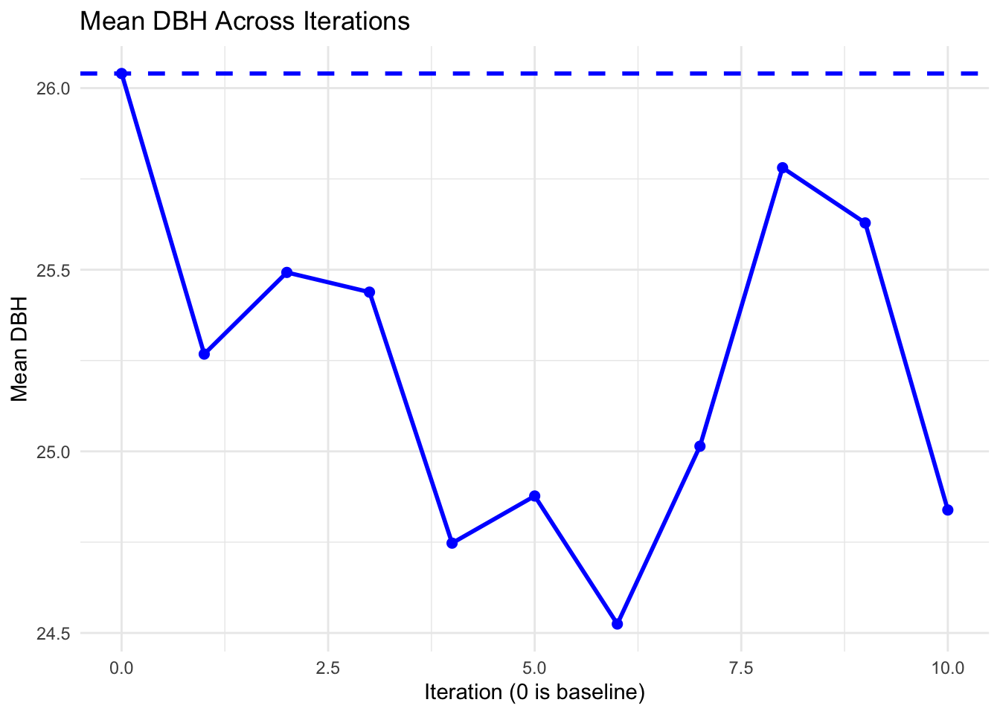
# Plot the results for total basal area
ggplot(results_df, aes(x = iteration)) +
geom_line(aes(y = total_basal_area), color = "green", size = 1, show.legend = TRUE) +
geom_point(aes(y = total_basal_area), color = "green", size = 2) +
geom_hline(yintercept = total_basal_area_initial, color = "green", linetype = "dashed", size = 1) +
labs(title = "Total Basal Area Across Iterations",
x = "Iteration (0 is baseline)", y = "Total Basal Area (m²/ha)") +
theme_minimal()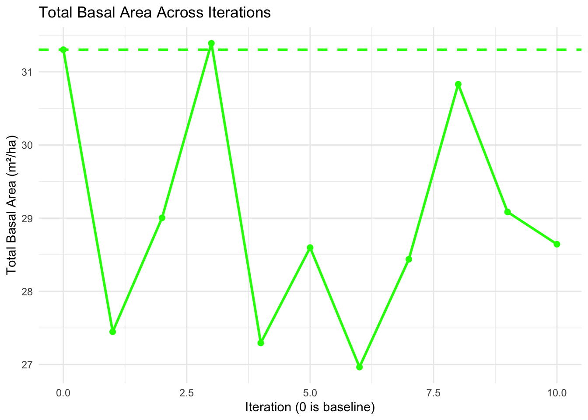
# Plot the composition of tree species across iterations
ggplot(composition_df, aes(x = factor(iteration), y = percentage, fill = species)) +
geom_bar(stat = "identity", position = "fill") + # Use position = "fill" for percentage stacking
labs(title = "Tree Species Composition Across Iterations",
x = "Iteration", y = "Percentage",
fill = "Species") +
theme_minimal() +
scale_y_continuous(labels = scales::percent_format(scale = 100)) + # Format y-axis as percentage
theme(axis.text.x = element_text(angle = 45, hjust = 1))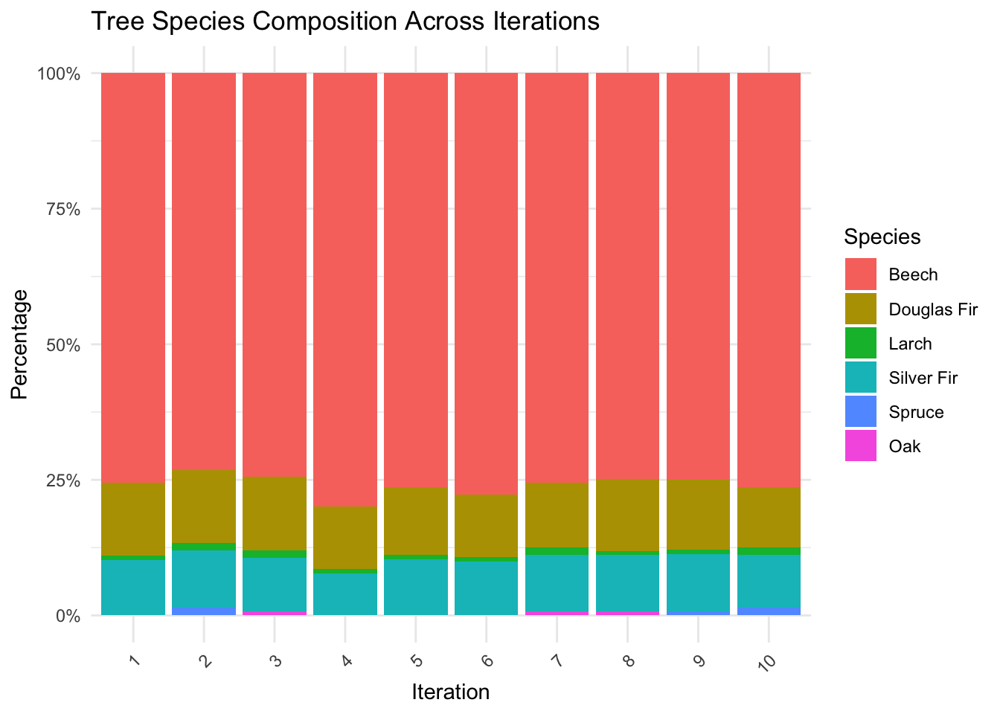
You can already guess that there is a slight variability in the tree measurements collected to given locations. Play around by varying the:
buffer size
plot number
coordinate shifting
and think about the different results.
Some questions about this whole script for you to answer:
What does the distribution tell us about the forest? Is it homogeneous? Do we have extremes? Do all trees have about the same size?
When you think about the sampling and the obtained results, try and summarize the pros and cons of the simple random sampling:
+ - Now give pros and cons using the regular grid method. Which one is more suitable? With which parameters?:
+ - Which influence has the size of the plot (so the radius where you take measurements)?
Which influence has the number of plots you are measuring?
Would you repeat an inventory using simply your phone’s GNSS? Why yes? Why no?
This whole exercise is meant to show you how susceptible such sampling inventories are to (sometimes large) errors compared to the true result.
So, as you have already learned in the lectures: Question the numbers!
Feel free to experiment with the code, develop your own ideas or visualizations – this script is now complete!